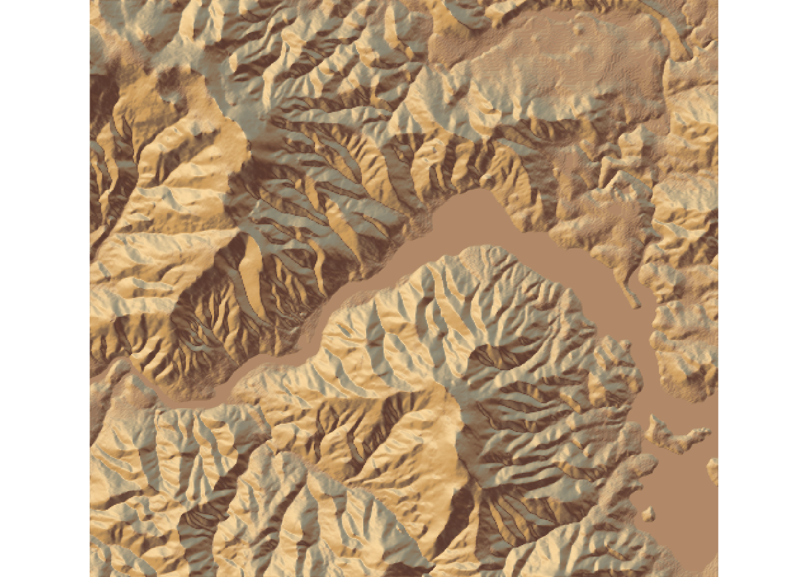
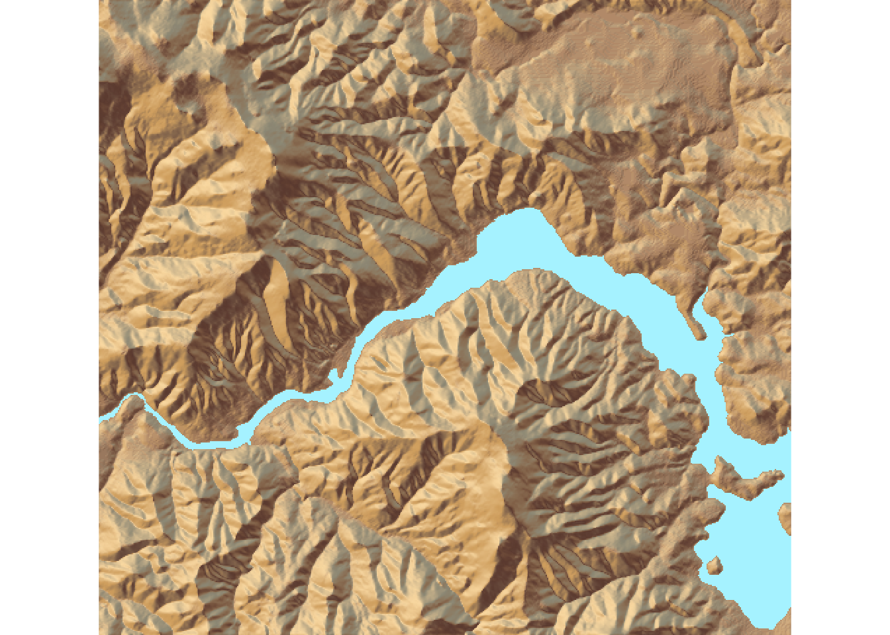
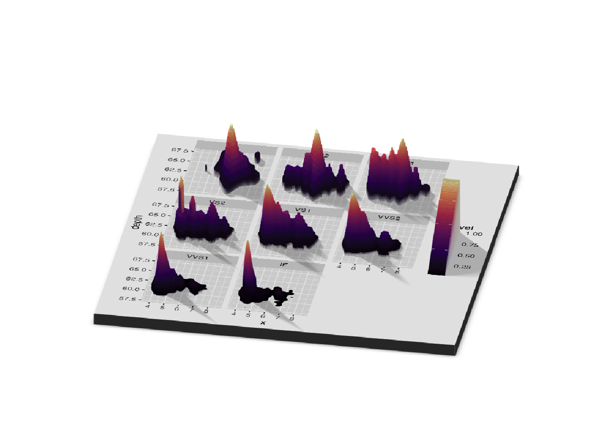
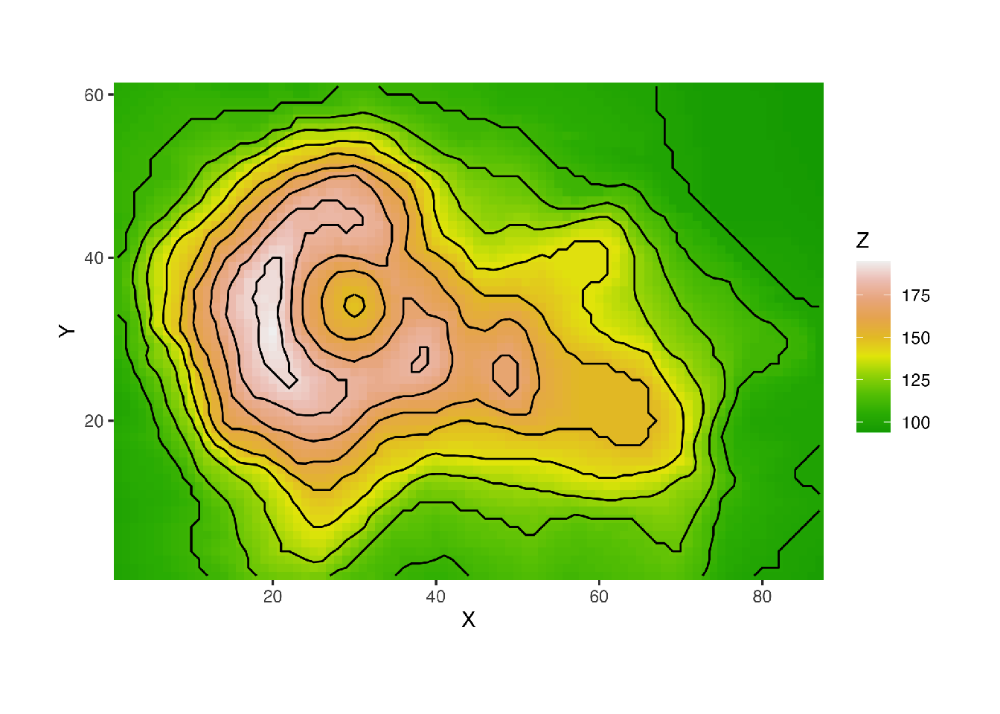

# remotes::install_github(
# "tylermorganwall/rayshader"
# )
# remotes::install_cran("rayrender") R Rayshader Overview
PHC 6099 - Summer 2023
Overview
R rayshader is an R package that allows users to generate high-quality 3D maps, visualizations, and animations.
rayshader also allows the user to translate ggplot2 objects into beautiful 3D data visualizations.
To install rayshader, you can use the following code in R:
Functions
rayshader0.35. 1 has 56 functions and 4 datasetsseven functions related to mapping
also has functions to add water and generate overlays
also included are functions to add additional effects and information to 3D visualizations
functions for converting rasters to matrices
functions to display and save your visualizations
rayshader has a function to generate 3D plots using ggplot2 objects
Example
First we load all the required libraries. These libraries are required for various functions and operations used in creating 3D maps with rayshader.
library(rayshader)
library(rayrender)
library(reshape2)
library(tidyverse)Example
Then, we download and load the data
# Here, I load a map with the raster package.
loadzip <- tempfile()
download.file("https://tylermw.com/data/dem_01.tif.zip", loadzip)
localtif <- raster::raster(
unzip(loadzip, "dem_01.tif")
)
unlink(loadzip)
# write_rds(localtif, "../data/01_rayshader_eg_20240503.rds")In this code snippet, we create a temporary file (loadzip) to store the downloaded zip file from the specified URL. The download.file() function is used to download the file, and unzip() is used to extract the “dem_01.tif” file from the downloaded zip. Finally, we load the raster data into the localtif object.
Create Map
To create a map first we need to convert this raster data file into a matrix using raster_to_matrix()
#And convert it to a matrix:
elmat <- raster_to_matrix(localtif)Loading required package: rasterLoading required package: sp
Attaching package: 'raster'The following object is masked from 'package:dplyr':
selectThen we use sphere_shade() and plot_map() to create our base map
elmat %>%
sphere_shade(texture = "desert") %>%
plot_map()
Here, elmat is a matrix created from the raster data using the raster_to_matrix() function. sphere_shade() applies shading to the elevation matrix, giving it a 3D effect. The texture parameter specifies the type of texture to be applied. In this case, it uses the “desert” texture. Finally, plot_map() is used to display the shaded map.
Add Water Layer
We can add a water layer to the map using detect_water() and add_water()
# detect_water and add_water adds a water layer to the map:
elmat %>%
sphere_shade(texture = "desert") %>%
add_water(detect_water(elmat), color = "desert") %>%
plot_map()
In this code snippet, detect_water() function detects water areas in the elevation matrix. Then, add_water() adds a water layer to the map using the detected water areas. The color parameter specifies the color of the water. Finally, plot_map() is used to display the map with the water layer.
Add Shadow Layer
We can also add shadow layer in the map.
# And here we add an ambient occlusion shadow layer, which models lighting
# from atmospheric scattering:
elmat %>%
sphere_shade(texture = "desert") %>%
add_water(detect_water(elmat), color = "desert") %>%
add_shadow(ray_shade(elmat), 0.5) %>%
add_shadow(ambient_shade(elmat), 0) %>%
plot_map()
Here, add_shadow() is used to add a shadow layer to the map. ray_shade() calculates shadows based on the elevation matrix (elmat). The zscale parameter controls the strength of the shadows. ambient_shade() generates ambient lighting for the map. The second parameter of add_shadow() specifies the opacity of the shadows. Finally, plot_map() displays the map with shadows.
Convert to 3D
We can convert this 2D map into 3D mapping using plot_3d() (by passing a texture map into the plot_3d function)
elmat %>%
sphere_shade(texture = "desert") %>%
add_water(detect_water(elmat), color = "desert") %>%
add_shadow(ray_shade(elmat, zscale = 3), 0.5) %>%
add_shadow(ambient_shade(elmat), 0) %>%
plot_3d(
elmat, zscale = 10, fov = 0, theta = 135,
zoom = 0.75, phi = 45, windowsize = c(1000, 800)
)
Sys.sleep(0.2)
render_snapshot()
We can add a scale bar, as well as a compass using render_scalebar() and render_compass()
render_camera(fov = 0, theta = 60, zoom = 0.75, phi = 45)
render_scalebar(
limits = c(0, 5, 10),
label_unit = "km",
position = "W",
y = 50,
scale_length = c(0.33,1)
)
render_compass(position = "E")
render_snapshot(clear = TRUE)
Here, render_camera() sets the camera properties for the 3D map. render_scalebar() adds a scale bar to the map. The limits parameter specifies the limits of the scale bar, label_unit provides the label for the scale, position sets the position of the scale bar, y controls the vertical position, and scale_length determines the length of the scale bar. render_compass() adds a compass to the map, and render_snapshot() captures the final image of the map.
3D plotting with rayshader and ggplot2
Rayshader can also be used to make 3D plots out of ggplot2 objects using the plot_gg() function
ggdiamonds = ggplot(diamonds) +
stat_density_2d(
aes(
x = x, y = depth, fill = stat(nlevel)
),
geom = "polygon", n = 200, bins = 50,contour = TRUE
) +
facet_wrap(clarity~.) +
scale_fill_viridis_c(option = "A")
par(mfrow = c(1, 2))
plot_gg(ggdiamonds, width = 5, height = 5, raytrace = FALSE, preview = TRUE)Warning: `stat(nlevel)` was deprecated in ggplot2 3.4.0.
ℹ Please use `after_stat(nlevel)` instead.
plot_gg(
ggdiamonds,
width = 5,
height = 5,
multicore = TRUE,
scale = 250,
zoom = 0.7,
theta = 10,
phi = 30,
windowsize = c(800, 800)
)
Sys.sleep(0.2)
render_snapshot(clear = TRUE)
Contour Plot
Rayshader will automatically ignore lines and other elements that should not be mapped to 3D.
Here’s a contour plot of the volcano dataset.
# Contours and other lines will automatically be ignored. Here is the volcano
# dataset:
ggvolcano <- volcano %>%
melt() %>%
ggplot() +
geom_tile(aes(x = Var1, y = Var2, fill = value)) +
geom_contour(aes(x = Var1, y = Var2, z = value), color = "black") +
scale_x_continuous("X", expand = c(0, 0)) +
scale_y_continuous("Y", expand = c(0, 0)) +
scale_fill_gradientn("Z", colours = terrain.colors(10)) +
coord_fixed()
par(mfrow = c(1, 2))
plot_gg(ggvolcano, width = 7, height = 4, raytrace = FALSE, preview = TRUE)Warning: Removed 1861 rows containing missing values or values outside the scale range
(`geom_contour()`).
plot_gg(
ggvolcano,
multicore = TRUE,
raytrace = TRUE,
width = 7,
height = 4,
scale = 300,
windowsize = c(1400, 866),
zoom = 0.6,
phi = 30,
theta = 30
)Warning: Removed 1861 rows containing missing values or values outside the scale range
(`geom_contour()`).Sys.sleep(0.2)
render_snapshot(clear = TRUE)
mtcars Data Example
Rayshader also detects when the user passes the color aesthetic, and maps those values to 3D
mtplot = ggplot(mtcars) +
geom_point(
aes(x = mpg, y = disp, color = cyl)
) +
scale_color_continuous(limits = c(0, 8))
par(mfrow = c(1, 2))
plot_gg(mtplot, width = 3.5, raytrace = FALSE, preview = TRUE)
plot_gg(mtplot)
Sys.sleep(0.2)
render_snapshot(clear = TRUE)